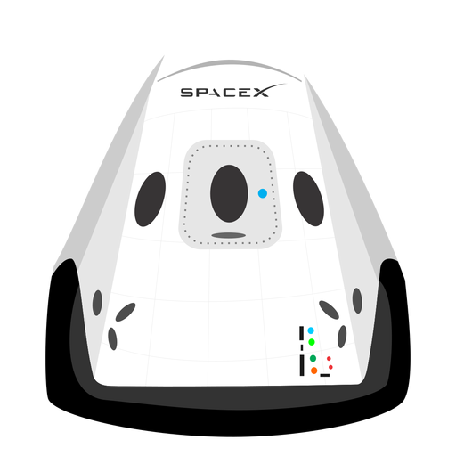

Hyperblog Tu blog de confianza
V2 Este es el título atractivo e interesante del post
Y esté es el parráfo de inicio donde vamos a explicar las cosas increíbles que se pueden hacer con una rama

Los blogs son la mejor forma de compartir información y tu ideas. Mucho más que ir a conferencias o salir en YouTube. Excepto si eres rockstar pero estadisticamente aún no lo eres
Suscribete y dale like